General
- Greece is one of the most visited countries in the world (and rightfully so)! Home to one of the most influential ancient civilizations, beautiful beaches, amazing food and some of the most friendly people in the world, Greece has everything you could ask for in a vacation destination. It is also a lot more affordable than many other popular European destinations
- Getting around
- Intercity bus system (KTEL) — a cheap and reliable way to get around the country. It provides connections all throughout the country
- Island hopping by ferry — if you're visiting the Greek Islands, ferries are some of the best ways to get around. Purchase your tickets in advance since popular routes often sell out during the summer. Ferryhopper or directferries are great resources to find routes and book tickets
- Flights — there are a lot of affordable domestic flights from Athens to most of the islands. Ferries can often get expensive so check for cheaper flights
- Food — Greek food is one of my favorite cuisines and there is so much more than just street gyros. It can be extremely affordable at local spots: a full meal at a local taverna is usually under 10€. Here are some dishes that are worth trying:
- Spanakopita — a savory, flaky pastry typically made of spinach and feta
- Moussaka — a baked casserole features layers of eggplant, potatoes, and spiced ground meat, all topped with a thick, creamy layer of béchamel sauce
- Souvlaki & Gyros — grilled meats often served with fries. Available almost everywhere and always a quick cheap option
- Greek Salad (Horiatiki) — a fresh, vibrant dish made with chunky tomatoes, cucumbers, kalamata olives, onions, and a thick block of feta cheese, dressed with olive oil and oregano
- Dolmades — tender grape leaves tightly rolled and stuffed with a savory filling of seasoned rice and herbs, sometimes mixed with ground meat
- Baklava — a rich, sweet pastry made of layers of phyllo dough filled with chopped nuts and sweetened with honey syrup
Athens
2–3 days recommendedAthens is one of the oldest cities in the world stretching all the way back 5,000 to 7,000 years ago. You can feel this when you're here; the history is literally everywhere from ancient ruins sitting in the middle of neighborhoods to columns visible through metro station floors. However, it is grittier than you might expect so set your expectations accordingly. I'd recommend spending 2 - 3 days here or even longer if you're a history buff.
Make sure you stay near the Plaka or Monastiraki Square as everything is walkable from here. Some neighborhoods in Athens are dodgy and extremely run down so make sure you double check before booking.
- Acropolis — the most iconic spot in all of Greece. Situated on the top of a large hill overlooking the city, you can see the Acropolis from almost anywhere and it even lights up at night. Buy the Athens City pass which is the combined ticket which gets you into several other archaeological sites.
- Give yourself 2–3 hours and go early since it can get very crowded by midday. The temples are impressively intact for their age and the views over the entire city from the top are excellent
- Ancient Agora — a huge park with statues and columns scattered throughout and the the birthplace of democracy. The temple at the top of the hill is one of the best-preserved ancient temples in Greece. The museum inside has a great artifact collection
- Syntagma Square & Changing of the Guard — the square where the Parliment of Greece is located. Everyday at 11am there is a changing of the guard ceremony. A marching band in modern military dress, followed by the Evzone guards in traditional Greek uniforms perform a ceremonial march that is great to watch
- Plaka neighborhood — one of the nicest areas in Athens, filled with winding streets, neoclassical buildings, restaurants, and souvenir shops. One of the best areas to stay as well
- Monastiraki Square — a lively square with a great view up to the Acropolis
- Hadrian's Library — an ancient Greek library built by Emperor Hadrian in 132AD, complete with a reading room, gardens and lecture halls. The ruins are pretty minimal today, mostly just the outer wall and some columns. I would skip this in favor of the other historical sites in Athens
- Bolivar Beach Club — there are beaches in Athens too! If you're craving a beach day, you can head 45 minutes from the city center by bus to Akti Iliou beach. Bolivar Beach Club has nice chairs, umbrellas and clear blue water and is less of a party vibe than your traditional beach club
- Eatery Bairaktaris Aiolou 29 — my favorite restaurant in athens serving traditional Greek food. It is affordable and located right by Monastiraki Square
- The Plaka neighborhood near the Acropolis is lined with restaurants so wander around and you'll stumble upon a place to eat
- Mosaikon Glostel - one of the nicest hostels I've ever stayed at with a rooftop bar, view of the Acropolis and great location. Expect to pay more since it is a premium hostel
- YellowSquare Athens — a clean hostel that is very organized and a walkable location, but not located in the nicest neighborhood. They have a rooftop where you can see the Acropolis
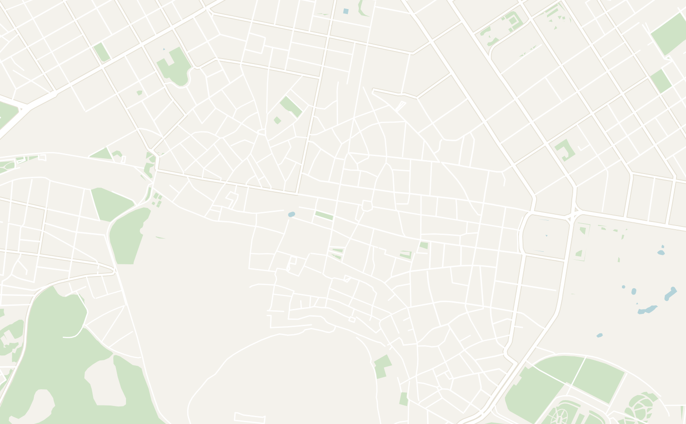
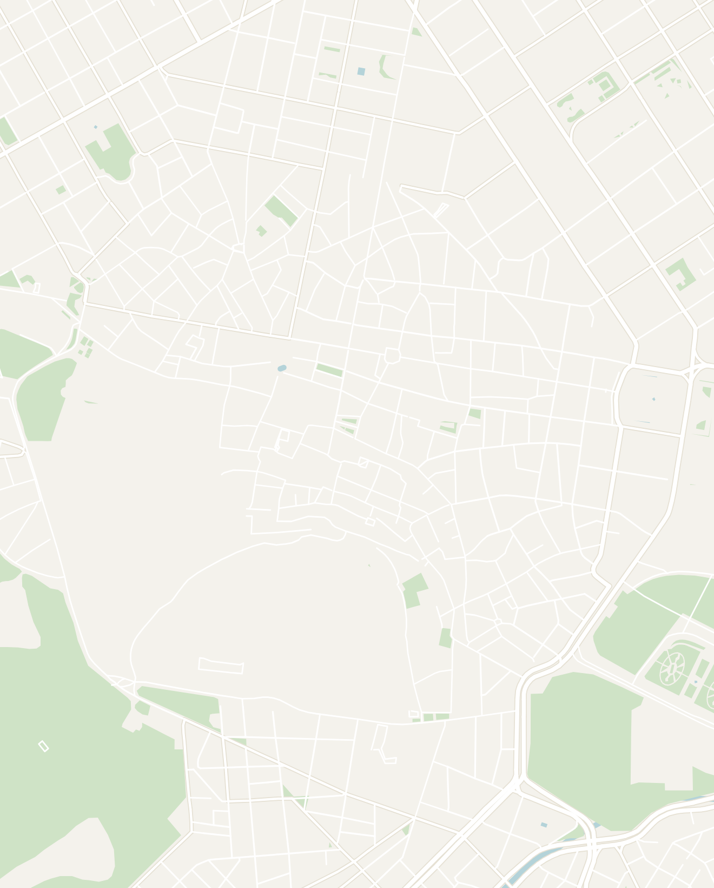
Double-tap to open in Google Maps
Meteora
2 days recommendedMeteora is home to famous monasteries perched on top of massive rock pillars rising straight out of a green valley. It was one of the most impressive landscapes I've ever seen and a must if you're ever in Greece.
Although there are day tours from Athens, I would recommend staying at least 1 night to fully experience Meteora and hike in the area. There are two main towns that you can stay in to visit Meteora:
- Kalambaka — this is the most popular town for tourists visiting Meteora. It is based around a small square with lots of accommodation options and restaurants
- Kastraki — located only 5 minutes away from Kalambaka, it is a small village right at the base of the rocks. I would recommend staying here as it is much more peaceful, has better views and everything is a 5 minutes walk away. You can also hike to the monasteries directly from the town
Located in the mountains of Northern Greece, it is a bit difficult to get to so bake in a day for transport. By bus, it is located 6 hours from Athens and 4 hours from Thessaloniki (with a transfer in Trikala). Book your tickets here.
- Sunset Viewpoints — there are two viewpoints that are just huge rocks called Viewpoint Meteora and Main Observation Deck of Meteora on Google Maps. You'll have unobstructed views down into the valley and see all the monasteries from here. I prefered the "Viewpoint Meteora", but views are incredible from both. Plan to arrive 30 minutes before sunset as the viewpoints get very crowded
- Rent an E-Bike — this was my favorite way to get around. The e-bikes make the hills a breeze and bombing the downhills on the way back was so fun. There isn't much traffic on the roads. Expect to pay roughly 15€ for 2 hours or 25€ for the day. There are shops both in Kastraki and Kalambaka
- Hike between the monasteries — spend a day hiking between the monasteries (~11 miles or 17km round trip). You'll have the trail completely to yourself as most tourists come by tour bus. Get a paper map from your accommodation and ask them to walk you through the trails since the trails are not on any app and not clearly marked
- Monasteries require you to be covered so bring long pants or use the cloth wrap provided at each monastery entrance
- Visit the 6 Monasteries — you can visit all 6 monasteries with each of them closed on a different day of the week and some close midday (so check hours)! Only certain portions of each monestary will be open to the public so some of them are very quick visits (10 - 15 minutes).
- Don't feel the need to visit all of them. I would chose 2 - 3 to focus on (Great Meteoron and Roussanou were my favorite). Each monestary costs 3€ to 5€ to enter
- Great Meteoron — the biggest and oldest monastery (founded in the 14th century). It has a wine cellar, museum with Byzantine manuscripts and an old church with impressive frescoes. The monks here make both wine and beer here!
- Varlaam — the most castle-like from the outside with a circular wall surrounding the entire complex. Has a famous 17th century frescoed church and an old wooden winch that was historically used to haul up both supplies and visitors in a net
- Roussanou — a nunnery with a beautiful small prayer room inside and stunning frescoes depicting scenes of Christian martyrdom. A very small monestary, but well worth it
- Holy Trinity (Agia Triada) — the most dramatic setting of all six, perched on a freestanding pillar with a 140-step tunnel carved directly into the rock leading up to the entrance. Featured in the James Bond film For Your Eyes Only
- St. Stephen (Agios Stefanos) — the most accessible monastery since you enter by a bridge rather than stairs. Now a nunnery run by an order of nuns known for their intricate embroidery work, which you can see and buy inside
- St. Nicholas Anapafsas (Agios Nikolaos) — the smallest of the six but has some of the best-preserved 16th century frescoes
- Holy Spirit Rock hike — a 40-minute hike up to the top of a massive boulder with the best view of Kastraki below. There is a tiny white church embedded in the side of a rock. You'll almost certainly have it entirely to yourself, the view is very rewarding and you might spot some turtles on the way. The hike is not online, but here is a detailed guide on how to navigate
- Kastraki
- Taverna Gardenia (Kastraki) — the best restaurant in Kastraki with great moussaka and a free Lemonopita dessert. They also sell a local beer made by the local monks which is very interesting to try
- Kofi Hub — a wonderful little coffee shop located on the main street in Kastraki
- Αρτοποιείο Μπαταλογιάννης Ευάγγελος — small bakery run by an old man where you can grab spiral feta rolls and spanakopita for breakfast or snack
- Kalambaka
- Restaurant Meteora Gkertsou Family — an incredible restaurant with amazing lamb cooked in red wine with rice. It is a bit more expensive, but portion sizes were huge
- Octo Coffee & Breakfast — a brunch spot with incredible homemade juices
- I would suggest staying in Kastraki over Kalambaka. The same bus from Trikala to Kalambaka will often continue on to Kastraki or you can take a taxi for just 5€
- Thalia Rooms (run by Ritsa) is a nice affordable option. The host named Ritsa was extremely friendly and helpful! She'll give you a paper map, show you the hiking trails and help you plan your itinerary on arrival
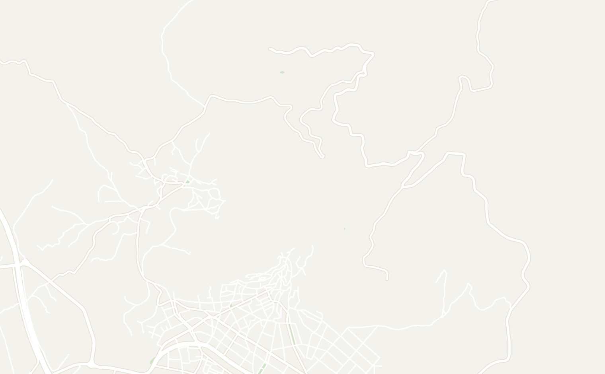
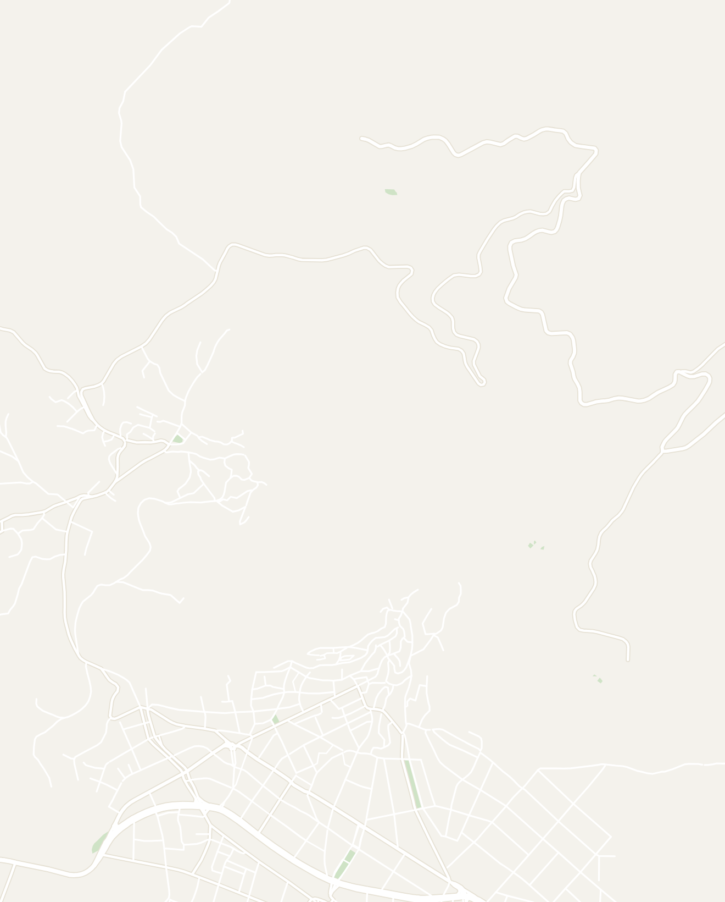
Double-tap to open in Google Maps
Santorini
3–4 days recommendedThe most iconic island in Greece known for the famous blue domes and white-washed buildings, jagged black cliffs and caldera views. It gets extremely crowded in peak season. Book accommodation well in advance. There are plenty of activities that you can do over the course of 3 - 4 days. I personally prefer other Greek Islands over Santorini as the crowds can be a bit overwhelming.
There are two main places to stay on the island:
- Oia is the more famous end of the island covered in the iconic white buildings with blue domes. It is based around one hillside that is covered with little honeymoon suites and a view overlooking the ocean. It is a great place for sunset and where all the fancy restaurants are. It tends to be the more expensive option and gets extremely crowded
- Fira (also known as Thira) is the main town on the island. I enjoyed being here more as it was less busy and much more affordable. I would recommend staying here as you can always walk or take a bus to Oia
- Hike from Fira to Oia — a great hike along the coastline of Santorini and a great way to explore the island. It takes roughly 2–3 hours and runs about 6.5 miles or 10.5km from end to end, but is very managable. It is a well-labeled trail that mixes paved city roads, hairpin mountain paths and dirt tracks. You'll have a nice view of the oceans and see many tiny one-room churches dot the route. Oia at the end is more polished with better blue-domed churches. Take the bus back to Fira
- Watch the Sunset at the Castle of Oia — the famous one. Gets absolutely packed — arrive at least an hour early and find a bar with a view before the crowd fills in. Standing in the crush is chaotic; a seat at a reasonably priced bar makes it much better
- Karavolades Stairs & Donkey Ride — you can either walk 30 minutes down a set of windy stairs from Thera to the marina along the caldera rim ...or you can ride a donkey down and enjoy the view. The donkeys are a bit wild, starting and stopping abruptly. It is a fun experience and only costs $10 one way
- Panoramic View Fira — this is one of the best viewpoints in Fira
- Three Bells of Fira — a famous blue domed church located right in Fira town
- Perissa Beach — the black sand beach on the south side of the island if you're looking to relax on the beach. However, it is not a spectacular beach so don't worry if you miss it
- Boat tour around the Caldera — this is a boat tour that typically departs from the Fira marina that includes a visit to the volcanic island, mud baths and hot springs. The fancier versions include dinner, drinks and sunset views. Unfortunately, I was sick and wasn't able to go, but heard it was worth it from other travelers
- Svoronos Bakery — an amazing bakery located in Thira
- Taverna El Greco — solid brunch spot with a great iced coffee and Greek omelette
- Vero Latte Gelato Santorini — a really good gelato shop in Fira
- Zafora Bar — a bar overlooking the old town of Fira. Cheap beers and a good atmosphere at night
- Fira Backpackers Place — a hostel located right in Fira town. I met some great people here. Many of the hostels are located from Thira or Fira so choose based on location
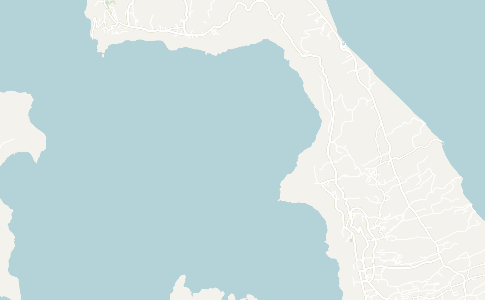
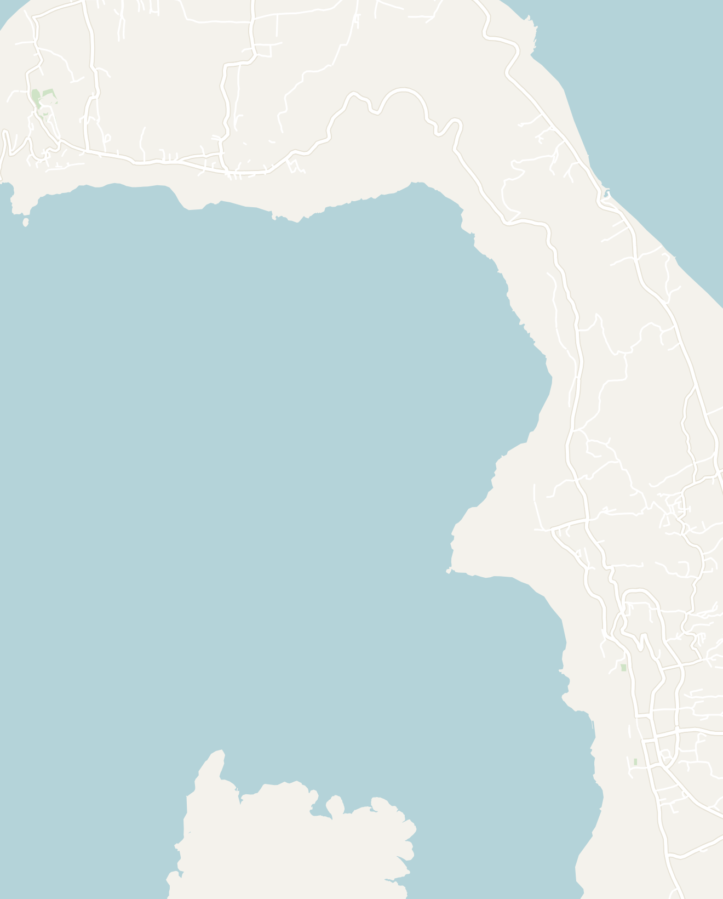
Double-tap to open in Google Maps
Ios
2–3 days recommendedI went to Ios on a whim after hearing two Australian guys rave about it and it ended up being my favorite island in Greece. It has everything you could want including: beautiful beaches, some of the best sunsets in Greece, amazing nightlife, great food and a charming old town perched on the hill above the port. I'd recommend it over more popular spots like Santorini or Mykonos
- Chora — the charming old town perched on top of the hill with white-washed buildings and blue domes. This is the best place to stay since most of the attractions, restaurants and hotels were here. It was very calm during the day, but came alive at night
- Church of Panagia Gremniotissa — located at the very top of the mountain above Chora town with palm trees and smaller white chapels on the hill above. It is a great sunset spot as you have a complete view of the coastline below
- Mylopotas — stay in this area if you want quick access to the beach. There were also plenty of restaurants, hotels and shops here
- FarOut Beach Club — one of the most lively beach clubs in Ios. They also have a hostel where you can stay
- Little Gem — an unlabeled spot on the cliffs near Harmony Ios restaurant. A beautiful viewpoint to look at the water that is blue-green and completely transparent below
- Pathos Bar — hands down one of the best places to watch the sunset in Greece. It is a huge open-air bar built into the mountainside overlooking the sea. The place is covered in modern art sculptures, two waterfront pools, a DJ inside a circular spiral and a pier out over the water. I went here two days in a row to watch the sunset which was absolutely incredible
- ATV around the island — the best way to explore the island. Rent an ATV and head out of the old town and explore the island. Ios feels pretty remote once you leave old town. There is also no traffic besides a few local Greek farmers, but the roads can be a bit windy.
- Expect to pay about 70€ for a full day or split with a friend. I would suggest going from Chora to Mylopotas beach and then on to some of the following more remote locations:
- Agios Ioannis Church — remote hilltop church with a large open courtyard and bells. Almost no visitors while I was there and it was very serene and peaceful
- Loretzaina — small secluded beach recommended by a local. Very clear water and almost no one there
- Paralia Gialos — the main beach near the port. Good for a relaxed afternoon
- Magganari Beach — supposedly the nicest beach on the island. Take the boat taxi from the port as it is too far for an ATV
- Kabouris Restaurant — solid Greek food in the old town. Try the moussaka — eggplant, meat and mashed potato, heavy and very good
- Salt — right on Paralia Milopotas beach. Great Greek salads with large croutons
- Beach House Ios — right on the beach near the port with excellent seafood
- Nightlife
- It is no secret that Ios is a party island. Most fo the nightlife is concentrated along one small road in Chora so it is really easy to hop around to different spots. Ios doesn't have much public transport or taxi's so most people stay in Chora at night. Here are some spots worth visiting (also stops on the local bar crawl):
- Sweet Irish Dream — cheap and lively with fire shots. Good place to start a night out
- Shush Silent Disco — genuinely fun silent disco
- Lost Boys — more of a bar/lounge vibe
- Others
- Pathos Bar — one of the best places to grab a drink and watch the sunset. However, it closes down relatively early and is located far from the main town of Chora
- FarOut Beach Club — known for day-time beach parties, located on Mylopotas so only popular at night for people staying in the area
- Francesco's Hostel — all the way up on the hill with great views over the water. Pool, bar and a great social atmosphere. The go-to hostel on the island
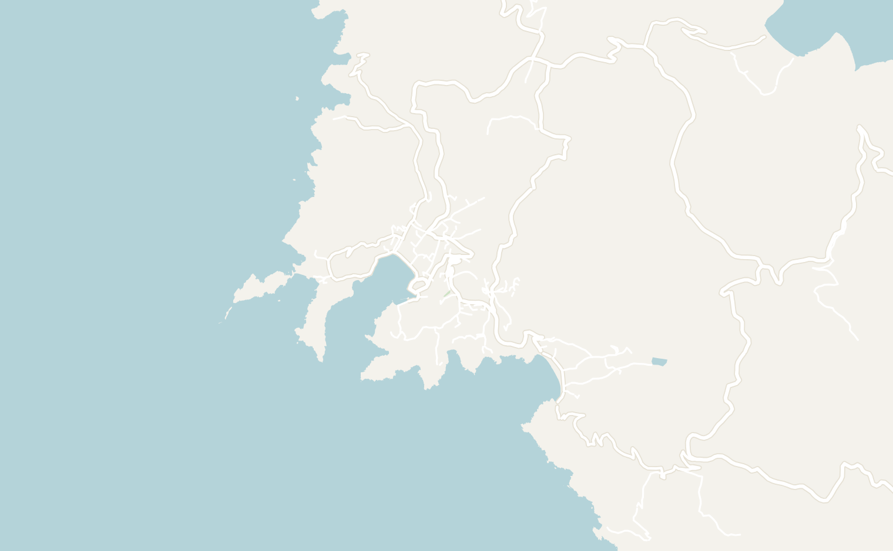
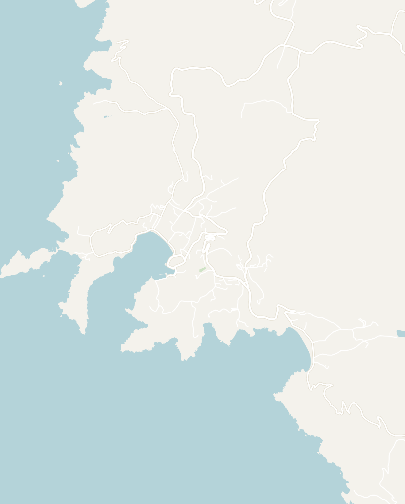
Double-tap to open in Google Maps
Mykonos
2–3 days recommendedMykonos is known to be the party island of Greece. I went during the first week of offseason so I found the beach clubs to be a bit strange, but I know a lot of my friends had a great time there. I enjoyed the other aspects of the island including the beautiful old town, iconic windmills and good beaches. Mykonos is a very popular island so the benefit is there are tons of restaurants and shops to choose from.
- Old Town — a classic Greek old town dotted with churches featuring distinctive red domes. Located right next to the old port, this is a great place to stay. The area itself isn't huge so it is easy to cover in a couple of hours
- The Windmills of Mykonos — there are four huge white windmills right next to each other overlooking the sea. The wind on this island is genuinely very strong compared to the other islands. This is a great place to watch the sunset
- Little Venice — a charming little strip with bars and restaurants built right over the water. It is great for a coffee or drink with a view and one of the most picturesque places on the island
- Beach Clubs / Nightlife
- Tropicana Beach Bar — one of the most popular beach clubs in Mykonos, known for their beach party that stretches on into the night. There is a steep 20€ cover that includes a free drink
- Cavo Paradiso — one of the most famous nightclubs in Greece, right next to Tropicana
- Skandinavian Bar — a popular bar in the old town with a large courtyard. A good place to hang out if you're looking for a more chill night out away from the clubs
- Attica Bakery — the best bakery on the island with excellent Greek pastries and excellent iced coffee. I went here almost every morning
- Souvlaki Story — known to be the best gyros in town with chicken or lamb and beef options. Very cheap and high quality food
- Niko's Taverna — a solid and affordable Greek sit-down spot. Try the Pasticcio (lasagna made with short pasta noodles instead of sheets)
- Mykocoon Hostel — one of the nicest hostels I stayed in with a super modern with a rooftop pool, balcony and very comfortable beds. I also met some amazing people here. It was very expensive at ~$90 per dorm bed. However, it is the only hostel on the island
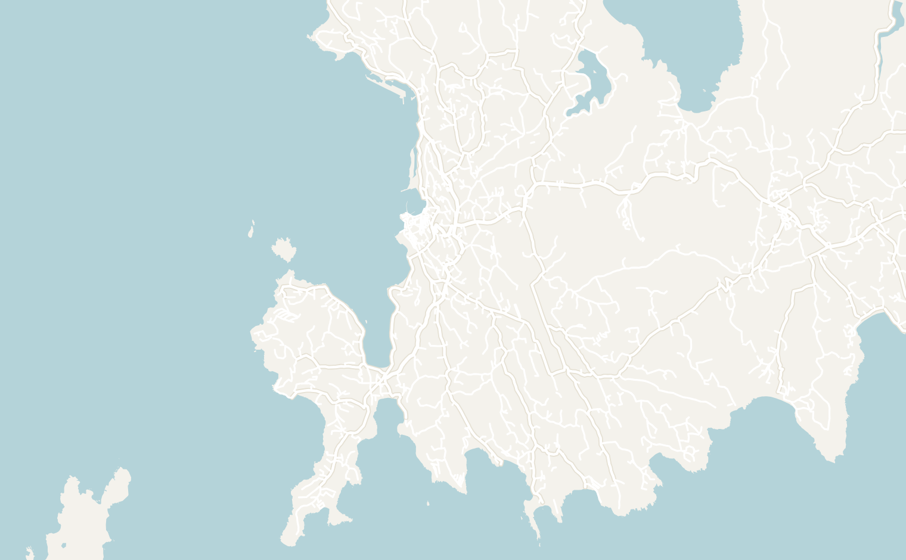
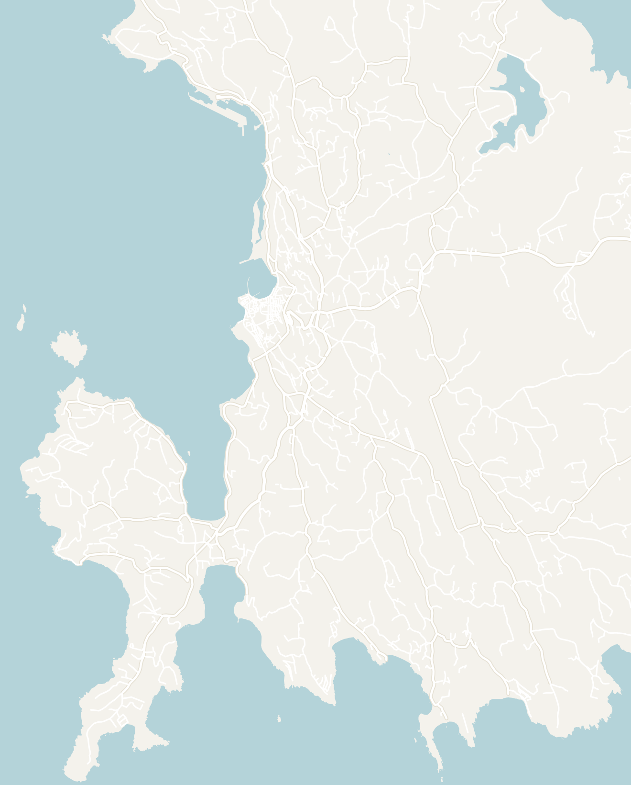
Double-tap to open in Google Maps
Naxos
2–3 days recommendedNaxos is a popular island in the Cyclades. It is bigger than the other islands, much more local-feeling and with better food than anywhere else I went in Greece. Expect a much more quiet vibe than the more famous Islands of Santorini or Mykonos. Naxos wasn't my favorite island and I'd recommend choosing others unless you are looking for a quiet getaway
- Temple of Apollo (Portara) — once an ancient Greek temple dedicated to Apollo, the only thing that remains is a massive ancient marble doorway standing alone on a rock peninsula right at the port. It somehow felt magical and looks like it's coming out of the sky. It is worth visiting at sunset and you can capture a photo of the sun setting through the portal
- Old Town — much more quaint and relaxed than Santorini old town. It has some souvenir shops and markets in the alleyways, but far fewer tourists giving it a more authentic feel
- Venetian Castle — a small marble castle at the top of the old town. The building itself wasn't impressive, but there are good views over old town and the island from here
- Agios Georgios Beach — the main town beach that is an easy walk from the port
- Boat tour to Koufonisia — a boat tour to a smaller neighboring island of Koufonisia. I didn't make this one due to the weather, but locals say it has the most beautiful beaches in all of Greece
- Menu με νου — my favorite restaurant in Greece. It was a fancier sit-down restaurant near the harbor. I had the most incredible set of lamb chops with potatoes and a sweet purée. Don't miss this and make sure to try their house wine
- Like many Greek Islands, there are no hostels on Naxos. There are primarily small family-run hotels like Hotel Kymata where I stayed
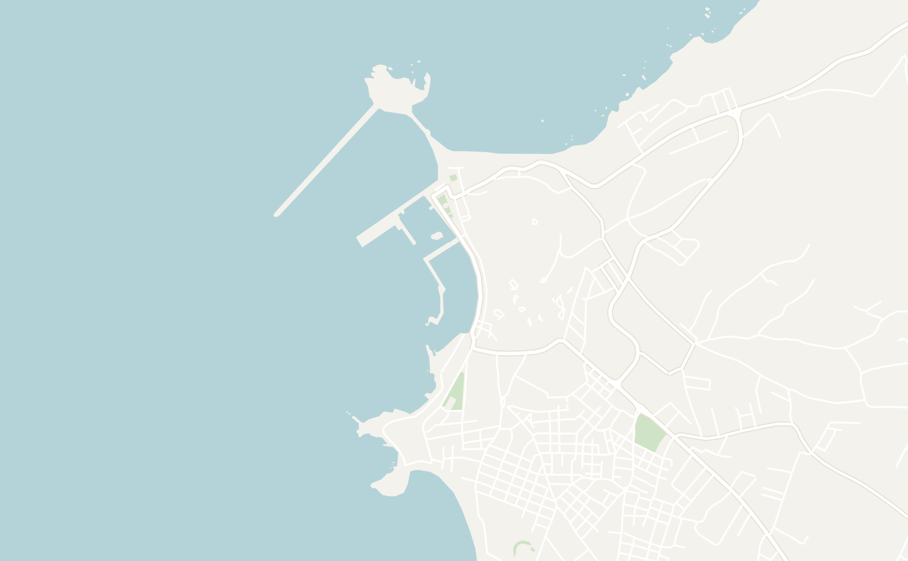
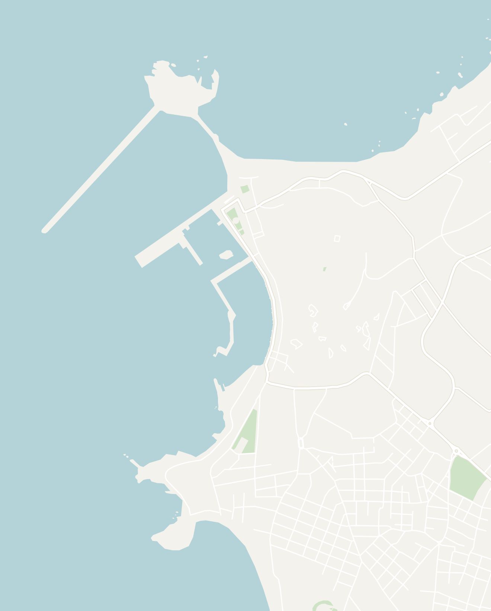
Double-tap to open in Google Maps
Thessaloniki
1–2 daysWhile passing through Northern Greece, I spent a couple days in Thessaloniki, the second largest city in Greece. It is more of a real city where Greeks live rather than a tourist one. There is a nice waterfront and the skyline is lined with massive apartment complexes. Embedded between these massive buildings are ancient churches and archaeological sites from the Ancient Greek, Byzantine and Ottoman periods. To be blunt it isn't particularly pretty, but worth stopping for 1 - 2 days if you're going to Meteora or particularly interested in history.
- White Tower of Thessaloniki and Museum — the symbol of the city and the best thing to do in Thessaloniki. A tall white Castle Tower located right on the waterfront, you can't miss it. The inside of the tower has been repurposed as a museum where each floor covers a different aspect of Thessaloniki's history: Byzantine, Ottoman, Jewish communities and the modern city. Get the English audio guide since everything inside is labeled only in Greek. There is a nice view once you make it to the top
- Thessaloniki retains much more of it's Byzantine than Ancient Greek history
- Both the Hagia Sophia of Thessaloniki and Holy Church of St. Demetrius are beautiful churches from the Byzantine area with impressive gold mosaics and painted icons
- Platia Aristotelous — the main walking street with gardens leading down to the waterfront. It is worth a stroll and is the nicest area in the city
- Kapani Market — an open-air market that felt very authentically Greek selling everything from goat heads, fresh fish to produce. It was fun to walk around and didn't feel touristy at all
- Arch of Galerius — impressive Roman arch with detailed marble carvings, a quick stop
- Τα μικρά Καλύβια — local homestyle cafeteria run by a mother and two brothers. All the food is pre-cooked so you can just point at what you want. I got a full meal for just 4.5€ which was insanely cheap
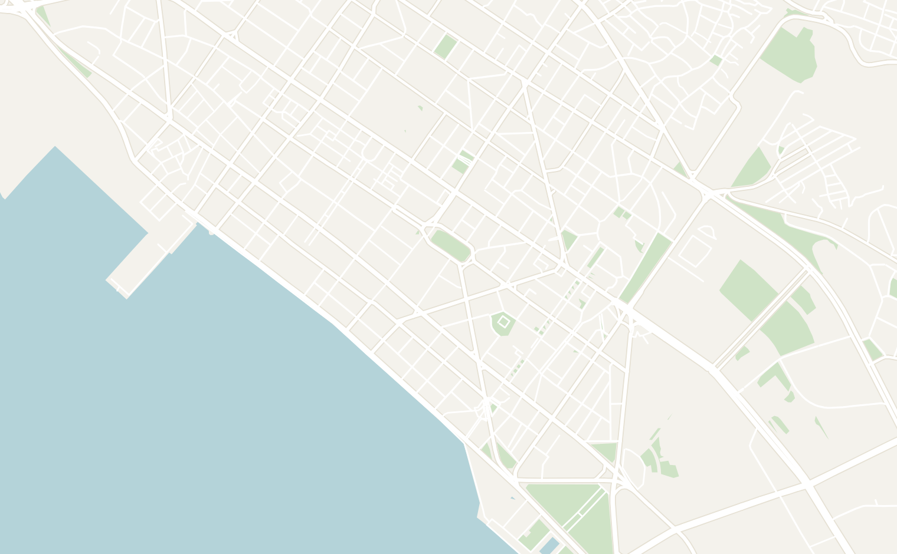
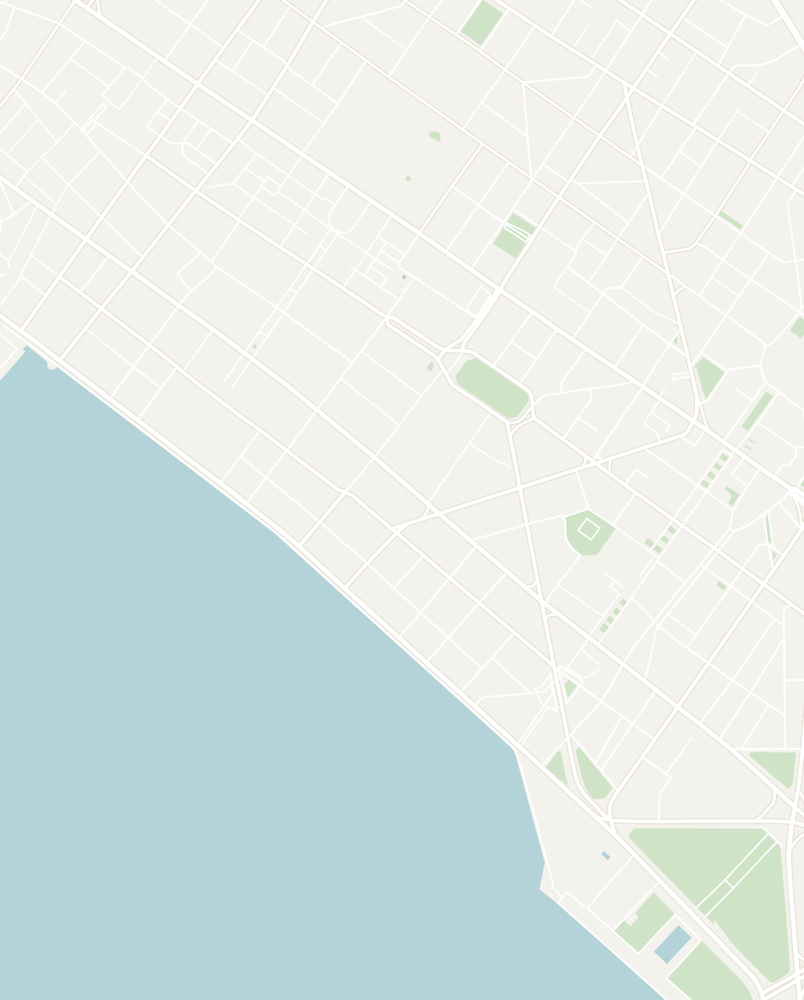
Double-tap to open in Google Maps
Other Places to Consider
There are so many amazing islands in Greece that the hardest part is choosing which ones to visit. Here are some other options that I've researched:
- Crete — the largest Greek island. Balos and Elafonissi are two of the most beautiful beaches in the country, the Samaria Gorge is a famous hike, and Chania old town is one of the prettiest in Greece
- Rhodes — located right off the coast of Türkiye, Rhodes has a beautifully preserved medieval old town (UNESCO World Heritage), Lindos village and good beaches in the south of the island
- Milos — home to the unique Sarakiniko white rock formations (looks like the moon!)
- Paros — charming whitewashed villages, great beaches and a more relaxed pace than Santorini or Mykonos. Good base for a day trip to neighboring Antiparos
- Corfu — lush green island in the Ionian Sea with a Venetian-influenced old town and good beaches like Paleokastritsa
- Zakynthos — home to Navagio shipwreck beach, one of the most photographed spots in all of Greece